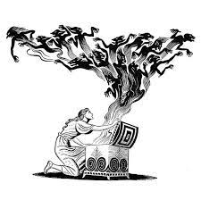

Júpiter é o maior planeta do Sistema Solar, estando situado entre Marte e Saturno. Seu tamanho rende-lhe vários satélites naturais orbitando ao seu redor, cerca de 70. Durante a noite, esse planeta pode ser visto a olho nu, sendo a segunda estrela mais brilhante, atrás apenas de Vênus, o segundo planeta na ordem usando-se o Sol como referência.
Quase todos os planetas do Sistema Solar têm nomes dos deuses da mitologia romana, que é bem semelhante à mitologia grega. Para os romanos, o deus Júpiter seria o deus dos deuses, como Zeus o é para os gregos, e filho de Saturno, que seria Cronos na Grécia. Júpiter recebeu esse nome por ser o maior dos planetas e o que, de certa forma, reina sobre os demais.
As características de Júpiter são colossais e impressionantes assim como o próprio planeta. Dentre as características visíveis, podemos destacar as nuvens coloridas que pairam na superfície. Tal coloração é resultado da composição atmosférica (hidrogênio e hélio) e das intensas tempestades que ocorrem, com ventos de até 600 km/hora. A nuvem mais famosa foi apelidada de Mancha Vermelha, tão grande que é capaz de encobrir toda a Terra. Essas tempestades são comuns em Júpiter devido a ele ser um planeta gasoso e ter a atmosfera com grande quantidade de hidrogênio. Estudos apontam que algumas tempestades duram horas, outras podem durar séculos, sendo fatais para os seres humanos. As cores de Júpiter podem ser sinais de grandes tempestades. O campo magnético de Júpiter é muito mais forte que o da Terra. Esse fato pode ajudar-nos a entender a grande quantidade de satélites naturais em sua órbita. A estrutura interna do planeta ainda é desconhecida. Estudos apontam para um núcleo sólido e rochoso, ou mesmo de gelo, o que explicaria a imensa força gravitacional desse planeta. Ao redor do núcleo, temos o manto, que possui hidrogênio metálico denso. Os estudos com base em sondas fazem-nos acreditar que a temperatura na fronteira entre núcleo e manto seja de 35 mil ºC. Indo para a superfície, temos uma mistura de hidrogênio líquido com gasoso, que se estende das nuvens (que podem ser vistas) até, aproximadamente, 1000 quilômetros de profundidade.
Zeus era uma importante divindade da mitologia grega, considerado pelos gregos antigos o deus supremo do Universo. Era detentor do raio e era o deus dos céus, do raio e do trovão. Lutou contra o próprio pai, Cronos. A devoção dos gregos a Zeus motivou a construção de templo e estátuas em sua homenagem.
Zeus era conhecido por punir severamente as pessoas que cruzavam o seu caminho e que cometiam ações que ele considerava incorretas. Um exemplo disso está na punição que ele decretou aos titãs que lhe combateram na Titanomaquia. Os titãs foram aprisionados pela eternidade no Tártaro, um dos domínios do submundo. A mitologia grega está repleta de exemplos dessas punições. Ele podia ser o causador de conflitos entre os deuses e entre os seres humanos, mas também era conhecido como uma divindade que podia intervir e resolver desentendimentos. Um dos mitos mais famosos narra a ação de Zeus para intermediar um acordo entre Hades e Deméter por conta de Perséfone. Os mitos gregos também narram que Zeus casou-se duas vezes, sendo que suas duas esposas foram Métis e Hera. A mitologia narra que Hera, deusa do casamento e protetora das mulheres e do parto, era extremamente ciumenta e punia quem se envolvesse com seu marido. Os ciúmes de Hera se davam pelo fato de que Zeus era extremamente infiel.
Nas lendas gregas, Pandora foi a primeira mulher, criada pelos deuses Hefesto e Palas Atena a mando de Zeus, que desejava castigar os homens depois que Prometeu entregou a eles o segredo do fogo.
Pandora (que em grego significa “aquela que tem todos os dons”) recebeu de cada deus ou deusa um dom diferente. Atena lhe deu a inteligência; Afrodite, a beleza; Hermes, a capacidade de mentir e enganar; e assim por diante. Zeus então enviou-a para que seduzisse Epimeteu, irmão de Prometeu. Impressionado com sua beleza, Epimeteu casou-se com ela. Mas Pandora tinha um segredo terrível.
Ela recebera dos deuses uma caixa (ou um jarro, segundo outras versões do mito) selada e que jamais deveria ser aberta. Curiosa para saber o que havia lá dentro, Pandora abriu a tampa. Mas ela não sabia que em seu interior estavam aprisionados todos os males do mundo, que foram libertados e caíram sobre a humanidade. Dentro da caixa ficou apenas a Esperança, que até hoje fica muito bem guardada, para ser usada quando mais precisamos dela.